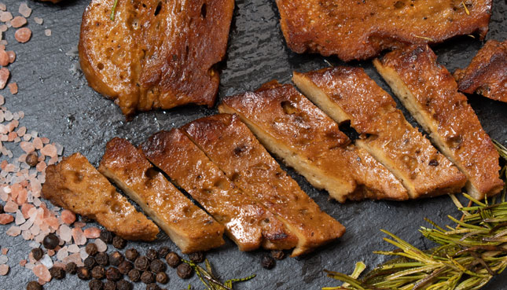

Seitan Döner

Delicious Seitan Döner in just a few simple steps, this recipe manages to stay healthy and delicious at the same time, with the power of Seitan and Chickpeas!
You'll need the following ingredients to follow along:
Ingredients
- One can Chickpeas (rinsed and drained)
- 140g Wheat Gluten
- 3 tbsp olive oil
- 80g flour
- 10g Salt
- 125ml Water
- Kofte Seasoning
Steps
- Rinse the chickpeas under warm water to make the kneading process easier
- Drain the water, move chickpeas into a large bowl
- Drizzle with olive oil generously
- Knead roughly with hands, try applying pressure with your whole body instead of just your arms.
- After the chickpeas become a paste, proceed with adding in the dry ingredients.
- Mix thoroughly
- Add in the water, start folding the seitan in thoughtful patterns, once the gluten gets activated, the form will be hard to change
- Try to form the seitan into a potato like shape
- Bring about 2L water to a boil in a large pot, make sure the pot is large enough to hold both the water and the seitan
- Add broth powder, slowly place the seitan in the water, let simmer for 30 minutes
- Slice the seitan into doner like pieces and fry in a pan lightly covered in olive oil until crispy
- Enjoy!